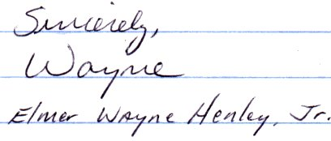

|
Elmer Wayne Henley
When Elmer Wayne Henley was fourteen years old, he was approached by a candy factory worker named Dean Allen Corll. Corll had an interesting business proposition: he'd give Elmer two hundred dollars for every boy Elmer brought over to Corll's home. Elmer's friend David Brooks was in on the deal too, and Corll supplied him with a car to make transporting the boys that much easier. Never mind the fact that Brooks was way too young to drive. Together, this trio would orchestrate the torture and murder of 27 boys, some as young as nine. Boys were invited to Corll's house under the guise of attending a party. There'd be liquor there, of course. And drugs, and girls. Guests were plied with intoxicants until they were so disoriented they could barely speak, and often they'd simply pass out. Upon awakening, they'd discover they were strapped and handcuffed to a two-by-four. Here, they'd be abused, tortured, and sexually assaulted for days. Their pubic hairs were plucked out one at a time. Objects were inserted into their rectums, and glass rods were shoved into their urethra and smashed. Genitals were removed, and all were sodomized. Sometimes they were strangled, other times they were shot. When a victim died, his body was discarded and the process of finding a new boy would begin again. These games ended on August 8, 1973. Elmer committed the unpardonable sin
of inviting over fifteen year old runaway Rhonda Williams - a Corll demanded that Elmer rape Rhonda right that second, but poor Elmer was too nervous and distracted to perform sexually. Corll began making fun of Elmer's impotence, prompting Elmer to grab a .22 caliber pistol. He shot Corll six times in the head and upper body. Then he released the others, who ran away. Then he called the Pasadena police department. "Y'all better come right now. I killed a man. The address is 2020 Lamar." Then he called his mother. Elmer led officers to a boat shed in southwest Houston, where the corpses of eight young men were unearthed, the first of 27 in various locations, and Elmer was charged with murder. In July of 1974, he and David Brooks were sentenced to six consecutive 99-year terms, one for each victim they personally disposed of. To this day, Elmer creates art from his prison cell, and he donates one third of his Houston art show profits to charity. The methods of Dean Allen Corll and Elmer Wayne Henley would inspire the work of serial killer / clown enthusiast John Wayne Gacy. RealAudio: Elmer cries into a police CB radio and confesses to his mother that he's murdered Dean. [0:54] Police interview with Elmer, with crickets chirping in the background. [0:28] Elmer being cross examined in court. [0:23] |
 girl
- something which definitely wasn't allowed. Elmer, Rhonda, and two young friends
sniffed paint varnish and glue until they passed out. When they woke up, all
four discovered they'd been tied to the rack by Corll, who was now brandishing
a gun. Elmer, no stranger to what victims on the rack were subjected to, pleaded
with Corll for his release. He promised to kill the girl while Corll had his
way with one of his friends. Corll agreed, and released Elmer from his restraints.
girl
- something which definitely wasn't allowed. Elmer, Rhonda, and two young friends
sniffed paint varnish and glue until they passed out. When they woke up, all
four discovered they'd been tied to the rack by Corll, who was now brandishing
a gun. Elmer, no stranger to what victims on the rack were subjected to, pleaded
with Corll for his release. He promised to kill the girl while Corll had his
way with one of his friends. Corll agreed, and released Elmer from his restraints.